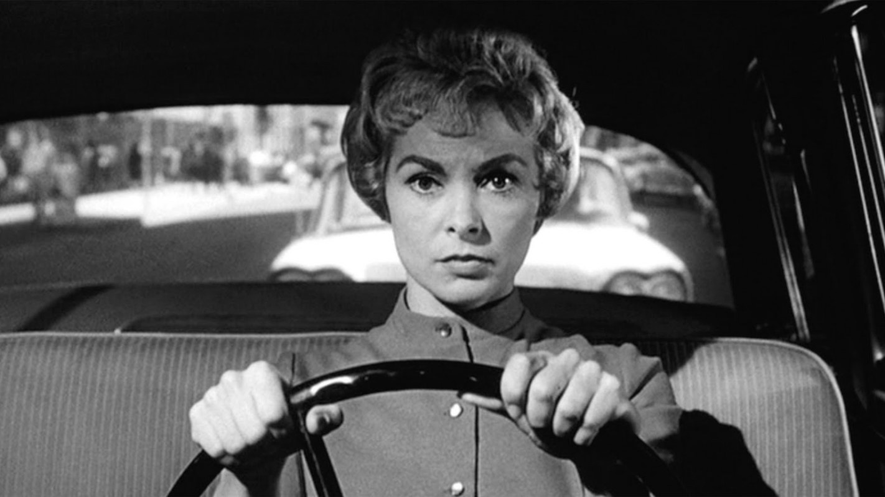
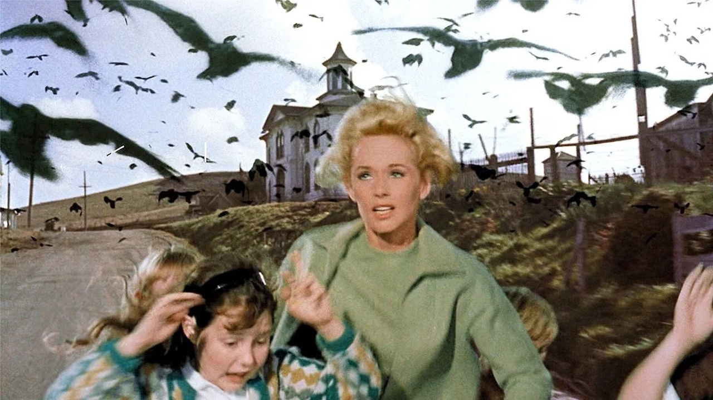
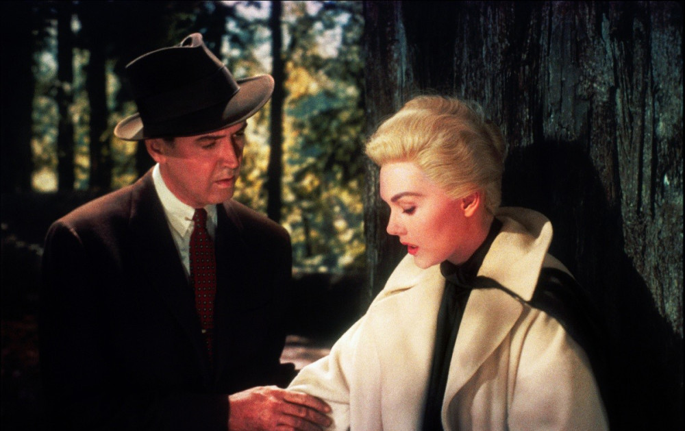
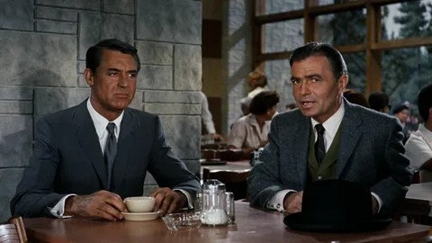
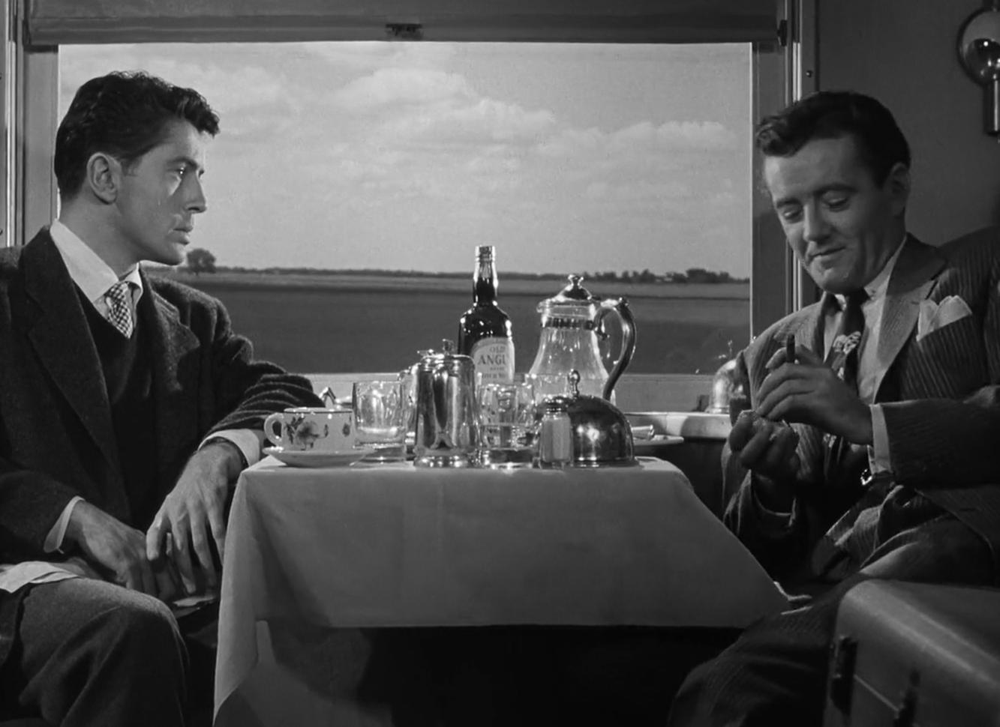
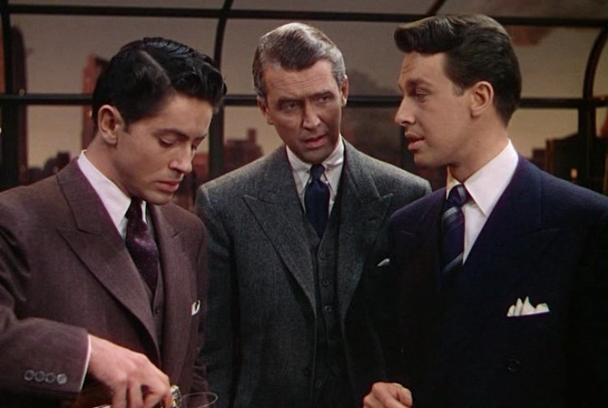

Альфред Хичкок
13.08.1899 - 29.04.1980
Лейтонстоун, Великобритания
Альфред Хичкок родился в 1899 году в Лондоне в католической семье торговца овощами.
Его строгое воспитание (включая раннее посещение полицейского участка в наказание от отца) позже породило его знаменитый «паранойяльный стиль».
Он был женат один раз — на киномонтажёре Альме Ревиль, которая стала его главным соратником; у них родилась дочь Патриция.
Хичкок — «король саспенса», мастер психологического напряжения, которое он создавал не через кровь, а через ожидание опасности («эффект бомбы»).
Его фирменные приёмы: субъективная камера (взгляд от лица героя), мерцающие лестницы,
холодные блондинки в главных ролях и обязательное камео в каждом своём фильме. Любимые жанры: психологический триллер, детектив,
шпионский фильм и фильм-нуар.
Известные фильмы

Психо
1960 год

Птицы
1963 год

Головокружение
1958 год

На север через северо-запад
1959 год

Незнакомцы в поезде
1951 год

Веревка
1948 год
Награды

Премия «Золотой глобус»
1 победа
1 номинация

Премия «Оскар»
1 победа
6 номинаций

Каннский кинофестиваль
3 номинации